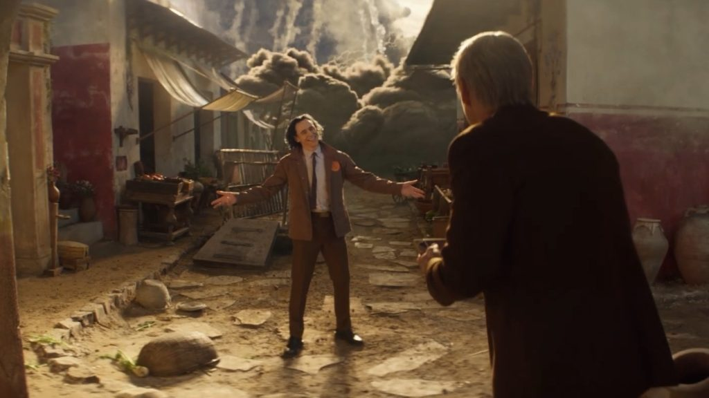
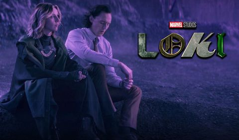
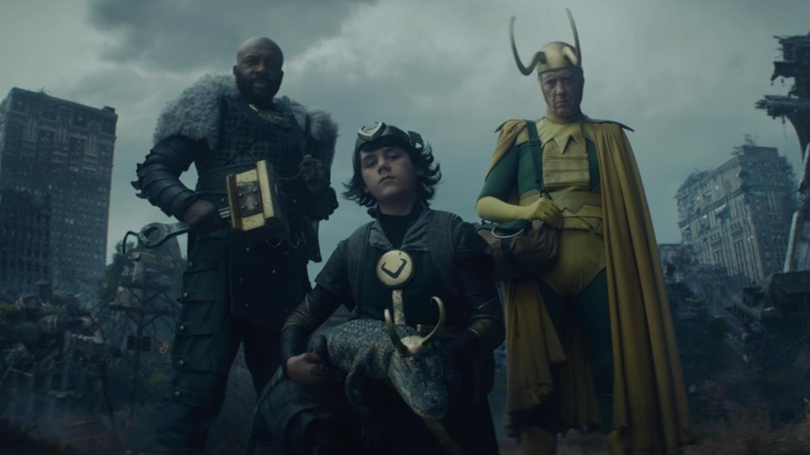
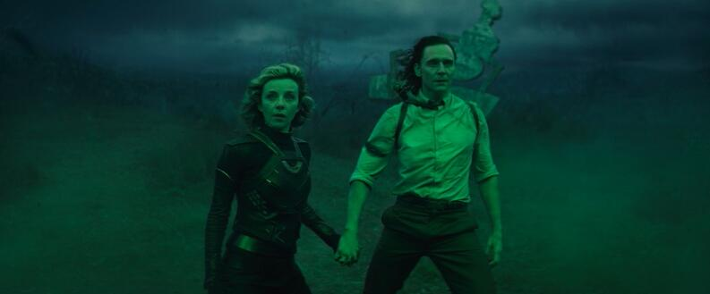
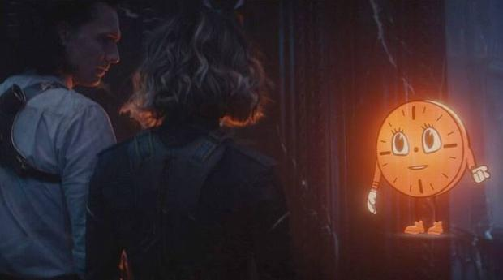

Los links de cada pagina pueden tener anuncios y/o ventanas emergenetes
Loki
Un glorioso propósito
Luego de robar el teseracto en «Avengers: Endgame», Loki cae ante la Autoridad de Variación TemporalClick aqui para ver el capitulo!
La variante

Mobius pone a trabajar a Loki, pero no todos en TVA están encantados con la presencia del Dios de la Travesura.Click aqui para ver el capitulo!
Lamentis

Loki descubre los planes de The Variant, pero tiene los suyos propios que alterarán para siempre el destino de ambos.Click aqui para ver el capitulo!
El evento Nexus

Los nervios desgarrados y la paranoia se infiltran en la TVA mientras Mobius y Hunter B-15 buscan a Loki y Sylvie.Click aqui para ver el capitulo!
Viaje al misterio

Loki intenta escapar de The Void, un purgatorio desolado donde se encuentra con versiones variantes de sí mismo.Click aqui para ver el capitulo!
Para todo el tiempo. Siempre.

El tiempo corre en el final de temporada que encuentra a Loki y Sylvie en una cita con el destino.Click aqui para ver el capitulo!
Todos los links de los capitulos son sacados desde la pagina https://cuevana3.cc/. Esto se hizo solamente para practica de estudio de Programacion Full Stack.